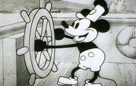

2D Animation  Animated motion, movies and commercials broadcasted worldwide are loved and enjoyed by everyone. The animated effects mainly fall in the category of 2D animation. Though animation has gone up to a high peek, but 2D animation is an ancient and an important aspect of animation. 2D animation is an hot topic and is popular among all. One may have heard about 2D animation but does s/he know what 2D animation is? What is 2D animaton? 2D animation is the process of creating motion effect two-dimenstional artistic space in two dimensional space, an object can move forward, backwards, left and right How it works? series of pictures (frames) are played in a timeline or reel thousands of drawings are first drawn in plane paper those papers are then animated by playing it or moving it in rapid succession it is animated in the time interval of 24 frames per second works in the accordance to the theory of persistence of vision Persistence of vision It is a theory that works on the supposition that an afterimage exists on the retina for one twenty-fifth of a asecond before escaping the present consiousnedd, allowing frames to connect to one another thus creating the perception of motion.
{kind=link}